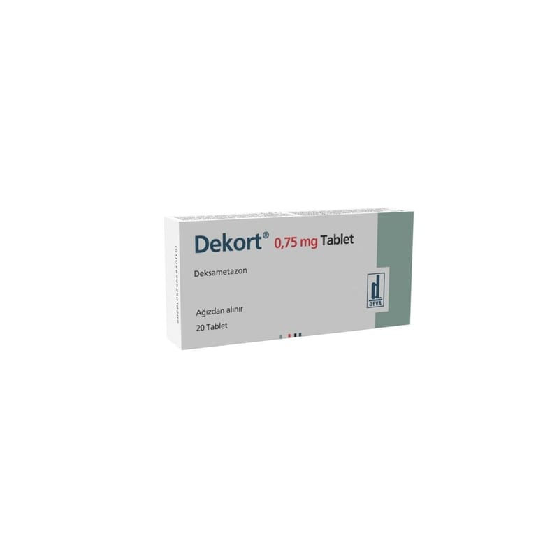

Dekort 0.75 mg Tablet, 20 Tablet

Ne için kullanılır
KT · Bölüm 1DEKORT, kortikosteroid grubuna dahil bir ilaç olan deksametazon içeren tablettir. DEKORT, 10 tablet içeren blister ambalajlarda bulunur. Her bir karton kutu 20 tablet içermektedir. DEKORT, deksametazon etkin maddesini içermektedir. DEKORT, vücutta iltihap ile ilgili çeşitli hastalıkların tedavisinde etkilidir.
Deksametazon alerjik bozukluklar, deri hastalıkları, iltihaplı bağırsak hastalığı, eklem iltihabı, romatizmal hastalıklar, göz ile ilgili (oftalmik) hastalıklar, kalp ve damar sistemi ile ilgili hastalıklar, kan hastalıkları, kas hastalıkları, ödeme yol açan hastalıklar, sindirim sistemi hastalıkları, sinir sistemi hastalıkları veya solunum bozuklukları gibi hastalıkların tedavisinde kullanılır.